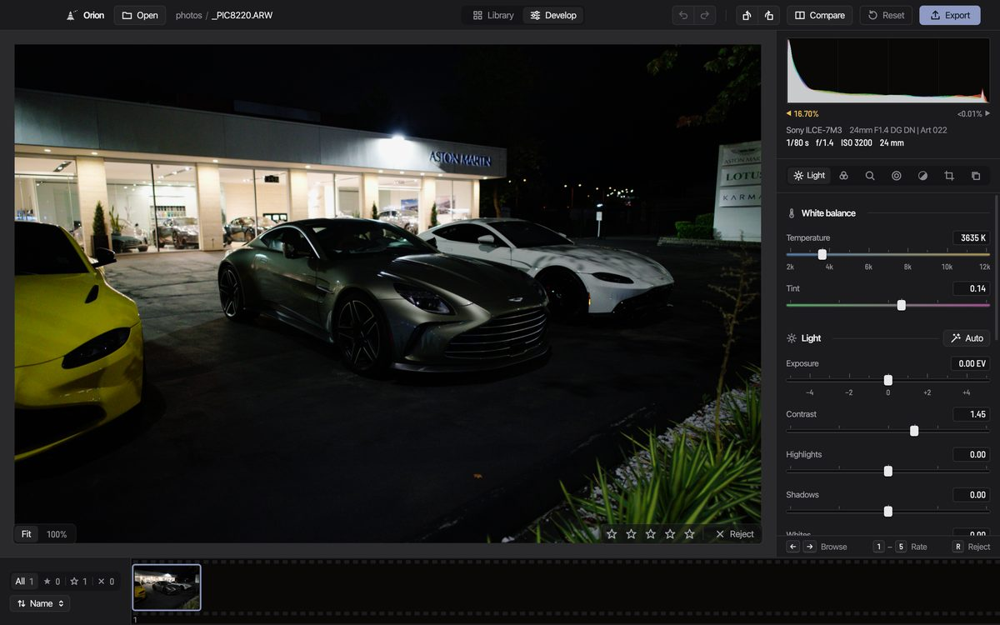

Orion for macOSOrion for WindowsOrion for LinuxOrion is a desktop app
The alpha for Macs with Apple silicon. Free to download, with no account to make.
The alpha for Windows. Free to download, with no account to make.
The alpha for Linux. Free to download, with no account to make.
Download for macOSDownload for WindowsDownload for Linux Release notes
Chosen for macOS from what your browser reports. Other systems are listed below.
Chosen for Windows from what your browser reports. Other systems are listed below.
Chosen for Linux from what your browser reports. Other systems are listed below.
Trying the alpha? Tell us how it went, two minutes.
This looks like an Intel Mac.
Orion is built only for Apple silicon (M1 and later), so it won't open here. There is no Intel build.
Downloading for another Mac? That button is the right file.
Not yet. Orion runs on Macs today. The Windows version is in testing and has no download yet.
Not yet. Orion runs on Macs today. The Linux version is in testing and has no download yet.
Watch Orion on GitHub Download for macOS
On GitHub, choose Watch, then Custom, then Releases, to hear when a Windows build ships.
On GitHub, choose Watch, then Custom, then Releases, to hear when a Linux build ships.
It runs on macOS, Windows, Linux. Open this page on your computer to download it, or share the link to send it there.
- File
- 0
- Size
- 0
- Released
- 0
- Runs on
- macOS 14 or later, Apple silicon
- SHA-256
- 0000000000000000000000000000000000000000000000000000000000000000

Opening it the first time
macOS stops the first launch because this alpha is signed ad hoc and isn't notarized. The app is the same either way; the warning is about who vouched for it.
Drag Orion to Applications
Open the downloaded disk image and drag Orion onto the Applications folder beside it.
Open it from the right-click menu
Right-click Orion in Applications, choose Open, then Open again. You do this once.
No Open button? Use Terminal
This clears the download flag macOS put on the app. It also lets Claude and other agents start Orion's MCP server.
xattr -dr com.apple.quarantine /Applications/Orion.app
Every platform
Orion is Mac only today.
-
macOSThis computer
Apple silicon (M1 or later), macOS 14 Sonoma or later
Alpha, available now
Download -
WindowsThis computer
Windows 10 or later, x64, a Direct3D 12 GPU
In testing, not released yet
Download -
LinuxThis computer
x86-64 AppImage, a Vulkan driver, glibc 2.35 or later (Ubuntu 22.04, Debian 12)
In testing, not released yet
Download -
Intel MacsThis computer
x86-64
Not built
-
iPhone, iPad, AndroidThis computer
Phones and tablets
No app: Orion is a desktop editor
Supported cameras
Orion opens 21 raw file types. LibRaw decodes them.
-
Sony
.arw .srf .sr2
Tested on ARW
-
Fujifilm
.raf
Bayer sensors only. X-Trans files are refused
-
Adobe DNG
.dng
Mosaic and linear DNG. Drone and phone files untested
-
Canon, Nikon, Olympus, Panasonic, Leica, Pentax and more
.cr2 .cr3 .crw .nef .nrw .orf .rw2 .rwl .raw .pef .srw .3fr .fff .iiq .erf .mrw
Opened by LibRaw, not tested
Not supported: X-Trans sensors, sensors that are not red, green and blue, and JPEG, TIFF, PNG and HEIC input (planned). Tested on Sony ILCE-7M3 and ILCE-7RM3 files, plus a synthetic DNG; nothing else has been tried. LibRaw 0.22.2 lists 1,258 cameras: see LibRaw's supported cameras. Being on that list does not mean Orion has been tried on it.
Older versions
Every build, its notes and its files are on GitHub Releases.
Editing with Claude
The MCP server ships inside the app. How agents use it.
Something broke
Write to alpha@bankoti.dev with the photo's camera and what you did.